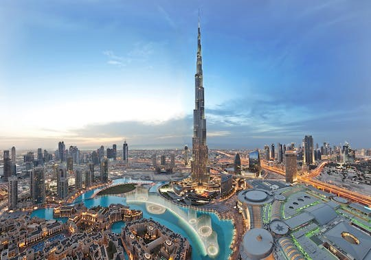

Dubai, an epitome glamour, is the city that is constantly evolving and developing. A perfect mesh of adventure and luxury, Dubai is known for pushing its boundaries with futuristic architecture, world-class entertainment, and thrilling activities. Whether you’re looking for shopping, relaxation, or business, Dubai has a little something for everyone.
Thanks to its strategic location between Europe, Asia, and Africa, Dubai first came into light as a prominent trading center in the 19th century. Owing to its strong pearl industry and proximity to the spice trade route, Dubai very quickly became one of the most successful trading hubs worldwide.
Dubai's background is a fascinating tale of adaptability and resilience. Over the years, the city has conquered numerous problems, ranging from economic crises to natural calamities. However, the city has always found its way and risen higher than before. Innovation thrives in this city and the proof is spewed all across, ranging from the man-made Palm Jumeirah to the iconic Burj Khalifa.